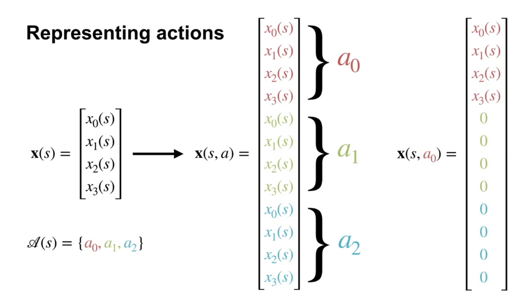
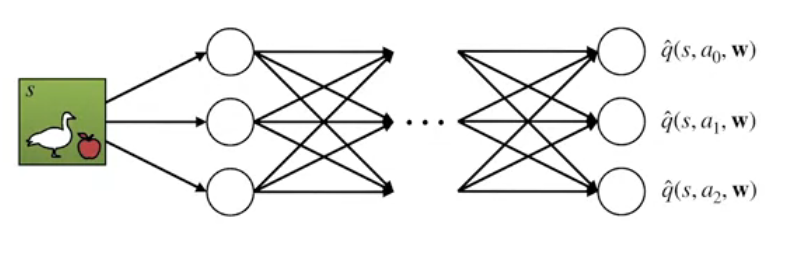
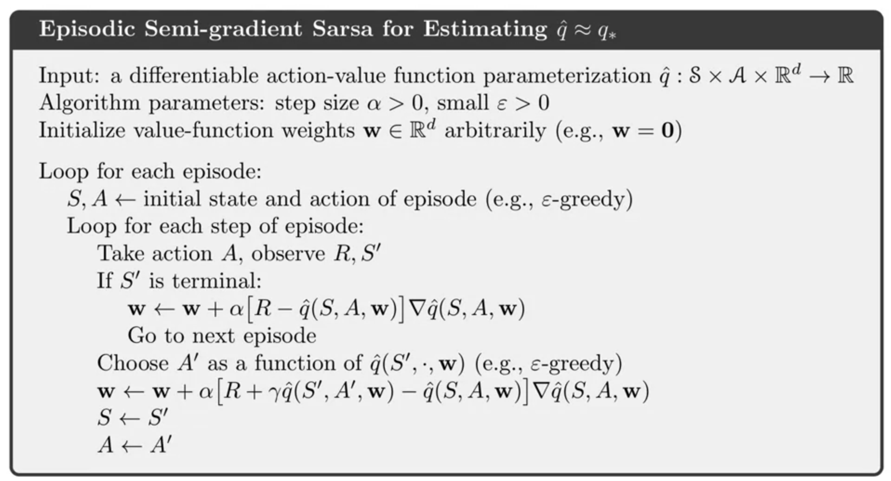
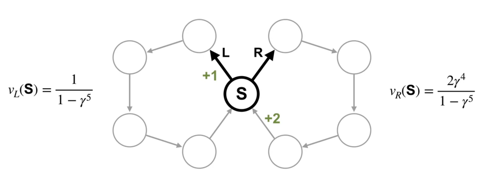
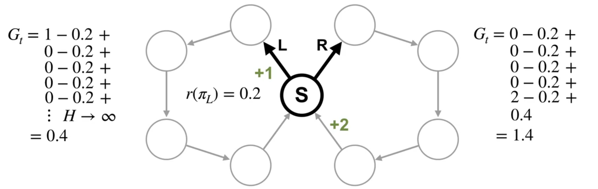
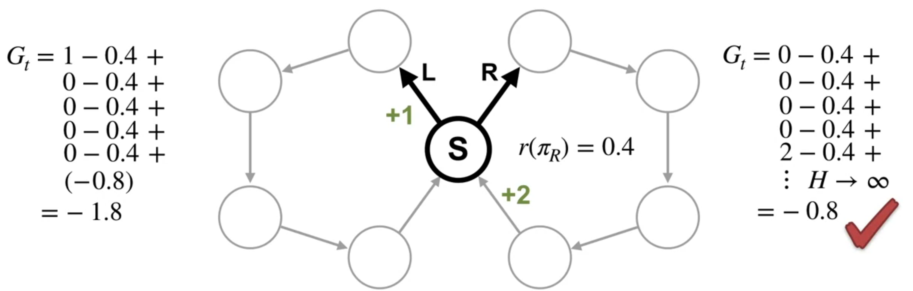

Lesson 1: Episodic SARSA with Function Approximation
Episodic SARSA with function approximation (Video)
In this video, Adam White, discusses the algorithm for “Episodic SARSA with function approximation”. He explains how it can be used to solve reinforcement learning problems with large or continuous state-spaces. He also delineates the importance of feature choices in this algorithm and how they can impact the performance of the system.
Two ways to construct action dependent features?


We see two techniques for constructing action dependent features. It is worthwhile noting that these two techniques are quite generally used in Machine Learning. For example Concatenating is used in CNN and with multi-head attention in Transformers.
- Stacking involves concatenating the state features with the action features. This is a simple and effective way to construct action dependent features.
Stacking can used both for linear function approximation and for neural networks in much the same way. Stacking is very simple but it has a problem, it keeps the same state features used for different actions separate. This seems to be both an over-parameterization (i.e. overfitting) and a an impediment to learning a good representation of the state.
- Passing Actions to Features attempts to remedy this issue. In this technique, the state features are passed through a neural network that also takes the action as input. This allows the network to learn a better representation of the state that is dependent on both the state and the action. This technique is more complex but can lead to better performance.
How to use SARSA in episodic tasks with function approximation
Next we will see how to use SARSA in episodic tasks with function approximation. The main idea is to use a similar update rule as before, but with the action value function approximated by a function approximator, i.e. it will be parametrized by weights w. Also we will need to add a the gradient of the to the update rule. As we will want to move the weights in the direction of the gradient of the action value function.
SARSA is a sample-based algorithm to solve the Bellman equation for action-values.
- It picks an action based on the current policy and then
- It policy evaluation by a TD updates of Q the action-value function based on the reward and the next action.
- Then it does a policy improvement.

[@Rummery1994OnlineQU] introduced SARSA, but the name is due to Rich Sutton.
This allows us to learn a good policy for the task. We will also need a step to update the weights.
So you think you understand SARSA with function approximation?
Why is this a semi-gradient method?
Hints:
- what is the MSE td error of the Q-value the next state?
If we define the MSE of the Q-value of the next state as the projected Bellman error, then we can see that the update rule is a projected gradient descent on the projected Bellman error. This is a semi-gradient method because we are not using the true value of the next state in the update rule.
\overline{{QE}}(w) \doteq \sum_{s\in \mathcal{S},a\in \mathcal{A}} \mu(s)\left[ q^*(s,a) - \hat{q}(s,a,\mathbf{w}) \right]^2
since we dont know the action value function we can’t compute the true value of the next state. Instead we use the value of the next state.
\begin{align*} \overline{{QE}}(w) &\approx \sum_{s\in \mathcal{S},a\in \mathcal{A}} \mu(s)\left[ r+\gamma \hat{q}(s',a',\mathbf{w}) - \hat{q}(s,a,\mathbf{w}) \right]^2 \\ &= \mathbb{E}_\mu \left[ (r+\gamma \hat{q}(s',a',\mathbf{w}) - \hat{q}(s,a,\mathbf{w}))^2 \right] \end{align*}
then we have the following objective function:
J(w) = \mathbb{E}_\mu \left[ \sum_{t=0}^\infty \gamma^t \left( r_t + \gamma \hat{q}(s',a',\mathbf{w}) - \hat{q}(s,a,\mathbf{w}) \right)^2 \right]
- where:
- \mu is the state visitation distribution
- \hat{q}(s,a,\mathbf{w}) is the approximated action value function
- \mathbf{w} is the weight vector
- r_t is the reward at time step t
- \gamma is the discount factor
\begin{align*} \nabla_\mathbf{w} J(w) &= \mathbb{E}_\mu \left[ \sum_{t=0}^\infty \gamma^t \nabla_\mathbf{w} \left( r_t + \gamma \hat{q}(s',a',\mathbf{w}) - \hat{q}(s,a,\mathbf{w}) \right)^2 \right] \\ &= \mathbb{E}_\mu \left[ \sum_{t=0}^\infty \gamma^t 2 \left( r_t + \gamma \hat{q}(s',a',\mathbf{w}) - \hat{q}(s,a,\mathbf{w}) \right) \nabla_\mathbf{w} \left( r_t + \gamma \hat{q}(s',a',\mathbf{w}) - \hat{q}(s,a,\mathbf{w}) \right) \right] \newline &= \mathbb{E}_\mu \left[ \sum_{t=0}^\infty \gamma^t 2 \delta \left( \gamma \nabla_\mathbf{w} \hat{q}(s',a',\mathbf{w}) - \nabla_\mathbf{w} \hat{q}(s,a,\mathbf{w}) \right) \right] \\ \end{align*}
where \delta = r_t + \gamma \hat{q}(s',a',\mathbf{w}) - \hat{q}(s,a,\mathbf{w}) is the TD error.
this is the projected gradient of the projected Bellman error.
which would give us the following update rule:
\mathbf{w} \leftarrow \mathbf{w} + \alpha \delta \left( \gamma \nabla_\mathbf{w} \hat{q}(s',a',\mathbf{w}) - \nabla_\mathbf{w} \hat{q}(s,a,\mathbf{w}) \right)
rather than the update rule we have in the algorithm:
\mathbf{w} \leftarrow \mathbf{w} + \alpha \delta \nabla_\mathbf{w} \hat{q}(s,a,\mathbf{w})
\mathbf{w} \leftarrow \mathbf{w} + \alpha [R_{t+1} + \gamma \hat{q}(S_{t+1},A_{t+1},\mathbf{w}) - \hat{q}(S_t,A_t,\mathbf{w})] \nabla \hat{q}(S_t,A_t,\mathbf{w})
- Can we do better than this?
Hint: using a projected Bellman error, we may get a better algorithm than SARSA with function approximation.
- Do we have any convergence guarantees for SARSA with function approximation?
In the text book [@sutton2018reinforcement sec. 10.1] the authors state that for a constant policy 1, this method converges in the same way that TD(0) does, with the same kind of error bound. Then they go on to say that for a non-constant policy, the convergence is a matter of ongoing research.
For the tabular setting, [@singh2000convergence] the authors show that the algorithm has asymptotic converges to the optimal policy provided that the policies from the policy improvement operator is “greedy in the limit with infinite exploration”
For the function approximation setting, Empirical results show that the linear SARSA can chatter, i.e. the weight vector does not go to infinity (i.e., it does not diverge) but oscillates in a bounded region.
- Since it is semi-gradient, we are not using the true value of the next state in the update rule.
- Are we biased?
- Does this algorithm have lower variance than the TD(0) algorithm?
- When we choose the next action, are we on policy or off policy?
- In the non terminal rule we use two samples, but they are highly correlated. Why is this a problem
- How can we reduce this correlation?
- What is the policy improvement operator?
- What is the Lipschitz constant of this operator and why don’t we see this in the SARSA algorithm?
The update for Episodic SARSA with function approximation
So far we have only been using function approximation to parametrize state value function,
V_\pi(s) ≈ \hat{v}(s,w) \doteq \mathbf{w}^T \cdot \mathbf{x}(S) \qquad \tag{1}
For SARSA we need a parametrized approximation \hat{q} for the the action value function q_pi,
q_\pi(s,a) ≈ \hat{q}(s,a,\mathbf{w}) \doteq \mathbf{w}^T \cdot \mathbf{x}(s,a) \qquad \tag{2}
Episodic SARSA in Mountain Car (Video)
Feature Choices in Episodic SARSA with Function Approximation
What features do we use for the mountain car problem?
for the state:
- position
- velocity
for the action:
- accelerate left
- accelerate right
- do nothing
Visualizing Value Function and Learning Curves
The first two figures show the learned value function for the mountain car problem. The first figure shows the value function for each state. The second shows a possible trajectory through the state space.
Then we look at the learning curve for the mountain car problem. This shows how the value function improves over time as the agent learns the optimal policy. We see the familiar exponential decay in the learning curves.
It worth noting that this is a very simple environment and that many more sophisticated deep learning techniques don’t do a very good job on this problem.
Expected SARSA with Function Approximation (Video)
Now we extend SARSA with under function approximation into Expected SARSA .
First, recall the update rule for Tabular SARSA:
Q(S_t,A_t) \leftarrow Q(S_t,A_t) + \alpha (R_{t+1} + \gamma Q( \textcolor{red}{ S_{t+1}, A_{t+1} }) - Q(S_t,A_t)) \qquad \tag{3}
SARSA’s update target includes the action value for the next state in action.
Next, recall how Tabular Expected SARSA uses the expectation over its target policy instead.
Q(S_t,A_t) \leftarrow Q(S_t,A_t) + \alpha (R_{t+1} + \gamma \textcolor{red}{ \sum_{a'} \pi (a' \mid S_{t+1}) Q(S_{t+1},a')} - Q(S_t,A_t)) \qquad \tag{4}
We can compute the same expectation using function approximation.
First, recall the update for SARSA with function approximation. It looks similar to the tabular setting except the action value estimates are parameterized by the weight factor, \mathbf{w}. i.e. q_\pi (s, a) \approx \hat{q} (s, a, \mathbf{w})
\mathbf{w} \leftarrow \mathbf{w} + \alpha [R_{t+1} + \gamma \hat{q}(\textcolor{red} { S_{t+1} } , \textcolor{red} { A_{t+1}}, \mathbf{w}) - \hat{q}(S_t, A_t, \mathbf{w})] \nabla \hat{q} (S_t, A_t, \mathbf{w}) \qquad \tag{5}
Expected Sarsa with function approximation follows a similar structure.
\mathbf{w} \leftarrow \mathbf{w} + \alpha [R_{t+1} + \gamma \textcolor{red}{ \sum_{a'} \pi( a' \mid S_{t+1}) \hat{q} (S_{t+1}, a' , \mathbf{w} )} - \hat{q}(S_t , A_t , \mathbf{w})] \nabla \hat{q}(S_t , A_t , \mathbf{w}) \qquad \tag{6}
How this extends to Q-learning easily, since it is a subset of Expected SARSA
Finally, for Q-learning with function approximation as Q-learning is a special case of expected SARSA in which we take the greedy. So next we replace the expectation over the target policy by argmax action to derive the Q-learning update rule.
The Q-learning update rule is:
\mathbf{w} \leftarrow \mathbf{w} + \alpha [R_{t+1} + \gamma \textcolor{red}{ \max_{a'} \hat{q}(S_{t+1},a',\mathbf{w})} −\hat{q}(S_t,A_t,\mathbf{w})] \nabla \hat{q}(S_t,A_t,\mathbf{w}) \qquad \tag{7}
Lesson 2: Exploration under Function Approximation
Exploration under Function Approximation (Video)
Optimistic Initialization as a Form of Exploration
In the tabular setting, we saw that we could use optimistic initialization as a form of early exploration. The way this works is that we initialize the value function to be very high, this way the agent will be encouraged to try to exploit one of the states. It will discover that the value of the state is not as high as it thought and will try to exploit another and so on until it have visited all the states and learned more realistic values for them. Over time the effect of the initial values will diminish. This however assumes two things:
- the number of states is finite
- the values are independent of each other
In the function approximation setting, we can try to do the same thing. This time we will want to initialize the weights so as to make the value function high. We face a number of issues in this setting:
- the values are not independent of each other so each weight may loose its optimistic value long before the agent has explored many of the states within the features neighborhood in the state space.
- Unlike values we can’t be certain that high weights will lead to high values. While this may work for linear function approximation, for a non-linear function approximation using Neural Networks with tanh activation functions, positive weights may lead to negative values.
epsilon-greedy exploration is easy to implement even with non-linear function approximation. However it is not as effective in the function approximation setting. Because it relies on randomness to explore states near those followed by the current policy. This is not as systematic as the exploration due to optimistic initialization in the tabular setting.
Improving exploration with function approximation is an open research question
In this course we will stick to epsilon-greedy exploration.
Q. Why is epsilon-greedy exploration ineffective in the function approximation setting?
- like in the bandit setting, the agent keeps exploring even after it has found the optimal policy.
- like in environments with a changing maze multiple epsilon-greedy exploration steps may be required to explore states required by the optimal policy that are not near the current policy. The chance for such an exploration is \mu(s)\epsilon^n where mu(s) is importance of the nearest state and n is the number of steps required to reach the target state. This can be vanishingly small for large state spaces. Which means it can take too long to find the optimal policy using epsilon-greedy exploration. We need to think of better ways to organize exploration in the function approximation setting.
- Prioritizing using count based on a coarse coding may be more effective. Even better if we track the uncertainty in the value function for each if these features. This is a form of intrinsic motivation.
However the last video by Satinder Singh discusses using intrinsic motivation to improve exploration in reinforcement learning systems. And in it he shows a different paradigm of exploration. Rather than getting agents to explore systematic one wants to explore in a way that is interesting to the agent.
Lesson 3: Average Reward
Average Reward: A New Way of Formulating Control Problems (Video)
You probably never thought about it, since discounting is familiar like a geometric series, but it can really skew the value function.

In most states, there’s only one action, so there are no decisions to be made. There’s only one state were a decision can be made. In this state, the agent can decide which ring to traverse.
This means there are two deterministic policies, traversing the left ring or traversing the right ring. The reward is zero everywhere except for in one transition in each ring. In the left ring, the reward is +1 immediately after state S. In the right ring, the reward is +2 immediately before state S. Intuitively, you would pick the right action because you know you will get +2 reward. But what would the value function tell us to do?
If we use discounting, what are the values of state S under these two different policies?
The policy that chooses the left action has a value of v_l(S) = \frac{1}{1-\gamma^5}. How do we figure this out? If you write out the infinite discounted return, you will see this is a fairly straightforward geometric series with a closed form solution.
The policy that chooses the right action has a value of v_r(S) = \frac{2 \gamma^4}{1-\gamma^5}. Let’s think of the value of state S under these two part policies for particular values of \gamma.
\gamma= 0.5 \implies V_L \approx 1 \qquad V_R \approx 0.1
This means the policy that takes the left action is preferable under this more myopic discount.
Let’s try
\gamma= 0.9 \implies V_L \approx 2.4 \qquad V_R \approx 3.2
So now we prefer the other policy.
In fact, we can figure out the minimum value of \gamma so that the agent prefers the policy that goes right. \gamma needs to be at least 0.841. So the problem here is that the discount magnitude depends on the problem.
For this example, 0.85 is sufficiently large. But if the rings had 100 states each, this discount factor would need to be over 0.99.
In general, the only way to ensure that the agents actions maximize reward over time is to keep increasing the discount factor towards 1.
Depending on the problem, we might need \gamma to be quite large. And we can’t set it to 1 in a continuing setting as the return might be infinite.
Now, what’s wrong with having larger \gamma? Larger values of \gamma can also result in larger and more variables sums, which might be difficult to learn. So is there an alternative?
The Average Reward Setting
r(\pi) \doteq \lim _{h \to \infty} \frac{1}{h} \sum_{t=1}^{h} \mathbb{E}[R_t S_0,A_{0:t−1} \sim \pi] \qquad \tag{8}
Let’s discuss a new objective called the average reward. Imagine the agent has interacted with the world for H steps. This is the reward it has received on average across those H steps. In other words, it’s rate of reward. If the agents goal is to maximize this average reward, then it cares equally about nearby and distant rewards. We denote the average reward of a policy with R_\pi.
r(\pi) = \sum_{s} \mu_\pi (s) \sum_{a} \pi(a \mid s) \sum_{s',r} p(s',r \mid s,a) r \tag{9}
More generally, we can write the average reward using the state visitation, \mu. This inner term is the expected reward in a state under policy \pi. The outer sum takes the expectation over how frequently the policy is in that state. Together, we get the expected reward across states. In other words, the average reward for a policy.
In the nearsighted example, the two deterministic possible policies visit either the left loop or the right loop indefinitely. In both cases, the five states in each loop are visited equally many times. In the left loop, the immediate expected reward is +0 for all states except one, which gets +1. This results in an average reward of 1 every 5 steps or 0.2.
r(\pi_L)=1/5=0.2 \qquad r(\pi_R)=2/5=0.4
Most states in the right loop also have +0 \mu to expected reward. But this time, the last state gets +2. This gives an average reward of 2 every 5 steps or 0.4.


We can see the average reward puts preference on the policy that receives more reward in total without having to consider larger and larger discounts.
The average reward definition is intuitive for saying if one policy is better than another, but how can we decide which actions from a state are better?
What we need are action values for this new setting. The first step is to figure out what the return is. In the average reward setting, returns are defined in terms of differences between rewards and the average reward R_\pi. This is called the differential return.
G_t = R_{t+1} −r_\pi + R_{t+2} −r_\pi + R_{t+2} −r_\pi \ldots \qquad \tag{10}
Let’s look at what the differential returns are in our nearsighted MDP.
The differential return represents how much more reward the agent will receive from the current state in action compared to the average reward of the policy. Let’s look at the differential return starting in state s, first choosing action L and then following \pi L afterwards.
The average reward for this policy is 0.2.
The differential return is the sum of rewards into the future with the average reward subtracted from each one. This sum starts in state S with the action L. We can compute it by summing to some finite horizon H. Then taking the limit as H goes to infinity. We are simplifying things slightly with this limit notation. While notation provider works in many cases, we need to use a different technique when the environment is periodic. In this case, we compute the return using a more general limit called the Cesàro sum, but this technical detail is not critical. The main point here is the intuition. We find that the differential return is 0.4. Now, let’s look at the other action. This time, we can break the differential return into two parts. First the sum for a single trajectory through the right loop. We can write the sum explicitly and it’s equal to 1. Then the sum corresponding to taking the left action indefinitely. This sum is the same as the differential return we just computed, 0.4. Adding the two parts together, we find that the differential return is 1.4.
We can write the average reward using the state visitation, \pi. This inner term is the expected reward in a state under policy \pi. The outer sum takes the expectation over how frequently the policy is in that state. Together, we get the expected reward across states. In other words, the average reward for a policy
In the average reward setting, returns are defined in terms of differences between rewards and the average reward r_\pi, which is called the differential return. The differential return represents how much more reward the agent will receive from the current state in action compared to the average reward of the policy.
The differential return represents how much better it is to take an action in a state then on average under a certain policy. The differential return can only be used to compare actions if the same policy is followed on subsequent time steps. To compare policies, their average reward should be used instead
This quantity captures how much more reward the agent will get by starting in a particular state than it would get on average over all states if it followed a fixed policy.
q_\pi(s,a) = \mathbb{E}_\pi[G_t \mid S_t = s,A_t = a] \qquad \tag{11}
Like in the discounted setting, differential value functions can be written as Bellman equations. They only differ in that they subtract r() from the immediate reward and there is no discounting. q_\pi(s,a) = \sum_{s',r} p(s',r \mid s,a)(r −r(\pi)) + \sum_{a'} \pi(a' \mid s')q_\pi(s',a') \qquad \tag{12}
Many algorithms from the discounted settings can be rewritten to apply to the average reward case.
When Average Reward Optimal Policies are Different from Discounted Solutions
Differential Value Functions v.s. Discounted Value Functions
Satinder Singh on Intrinsic Rewards (Video)
Satinder Singh is a professor at the University of Michigan. He is a leading researcher in reinforcement learning and has made significant contributions to the field. In this video, he discusses intrinsic rewards and how they can be used to improve learning in reinforcement learning systems. It’s worth noting that he is one of the researchers who has worked on options with Doina Precup.
Now Satinder Singh is a good speaker and he has lots of interesting research results to share. Unfortunately, this video is not his finest hour. I would definitely recommend watching some of his other talks linked above.
What are the issues with extending some of the exploration methods we learned about bandits and Dyna to the full RL problem? How can we do visitation counts or UCB with function approximation?
A control agent with function approximation has to explore to find the best policy, learn a good state representation, and try to get a lot of reward, all at the same time. How might an agent balance these potentially conflicting goals?
Footnotes
e.g. epsilon greedy policy without decay↩︎